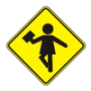
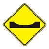
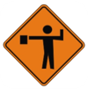
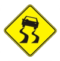

Bienvenido a la Actividad
Pon a prueba tu agilidad visual y conocimientos viales
¡Todo listo para comenzar!
Instrucciones de la Actividad
A continuación se presentará una serie de 10 preguntas sobre señales de tránsito.
En cada pantalla verás la consigna y 6 señales debajo:
toca la señal correcta lo antes posible.
Al seleccionarla, el sistema pasará automáticamente a la siguiente.
¡Tu velocidad y precisión determinarán tu lugar en el ranking de la jornada!
Muestra de señales que encontrarás




Pregunta 1 de 10
00:00.00
Zona escolar
¿Qué señal preventiva te advierte sobre la cercanía de un establecimiento educativo y la posible presencia de menores cruzando la calzada?
Toca la imagen que corresponda para avanzar:
🏆
¡Excelente Participación!
Participante
Aciertos
10 / 10
Tiempo Total
00:34.20
✓
Tu resultado ha impactado exitosamente en el panel central.
¡Sigue la proyección en la pantalla gigante de la sala para ver el podio de ganadores al cierre de la jornada!